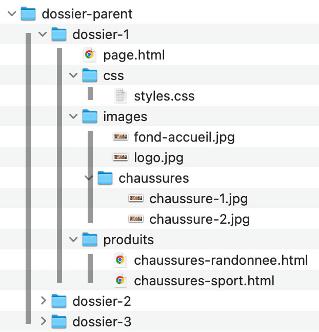
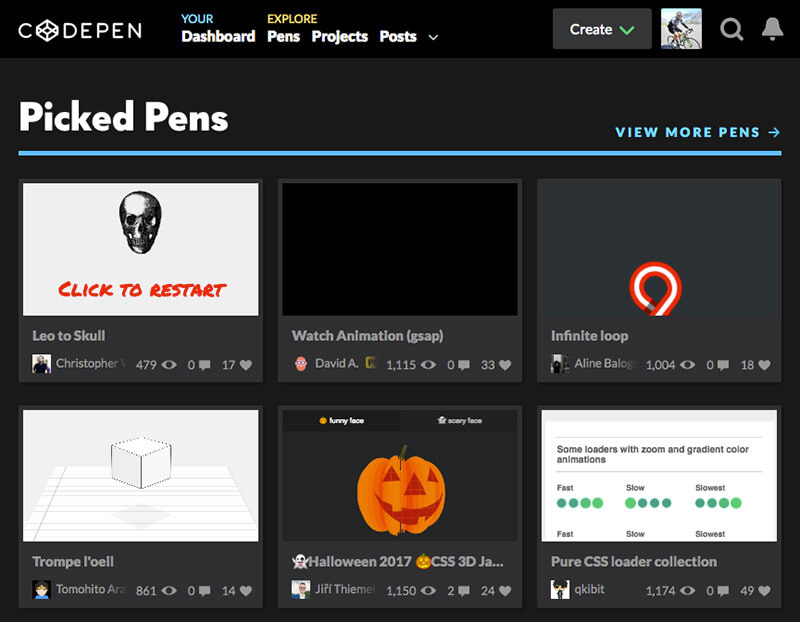
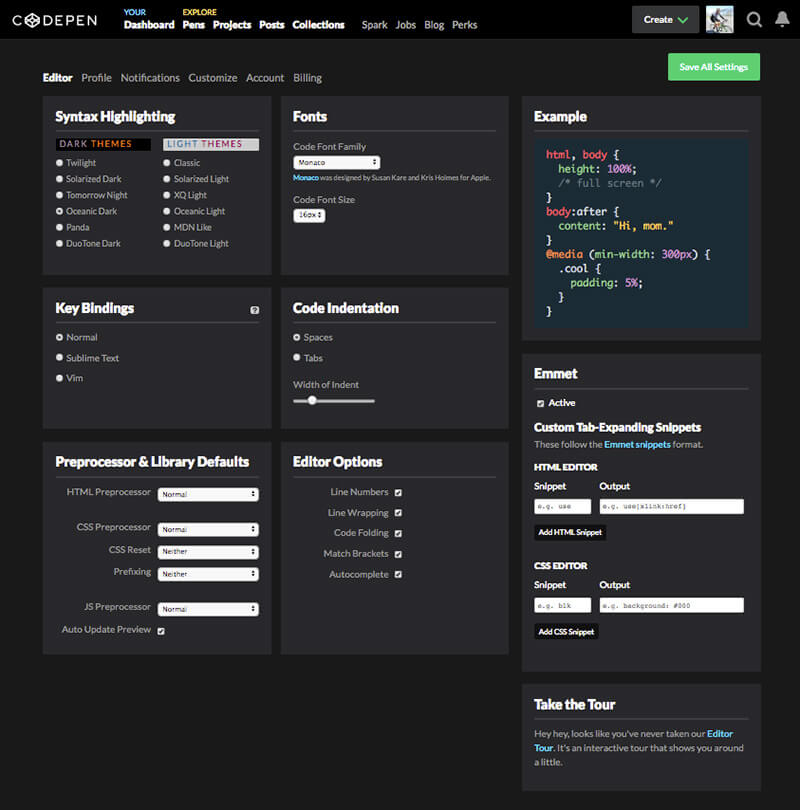
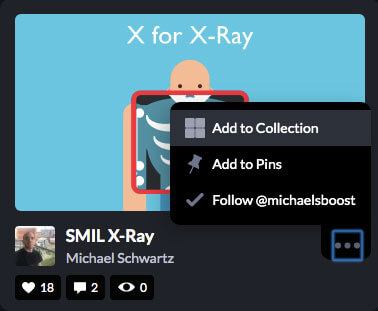
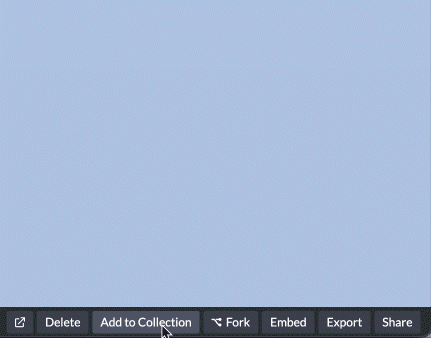
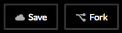
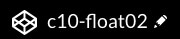

Chemins relatifs et absolus
Les pages HTML ne sont pas toujours situées au même niveau hiérarchique dans l'arborescence des dossiers d'un site web. Le chemin pour atteindre un document HTML, un document CSS ou une image en particulier n'est donc pas toujours le même.
Afin de résoudre ce problème, il faut adapter les chemins relatifs vers les documents en fonction du fichier de départ.
Voyons la différence entre les chemins relatifs et les chemins absolus.
Chemin relatif
page.html- La cible (
page.html) est recherchée par le navigateur au même niveau que le document html où se trouve l'hyperlien. dossier/page.html- La cible (
page.html) est recherchée par le navigateur dans le sous-répertoire dossier, à partir du document html où se trouve l'hyperlien. ../dossier/page.html- Où "
../" signifie que la page est recherchée à partir du répertoire parent (on remonte d'un niveau). ../../dossier/page.html- Où "
../../" signifie que la page est recherchée à partir du répertoire ancêtre (on remonte de deux niveaux). - Il est tout à fait possible de remonter de plus de deux niveaux de répertoires. Pour cela il faudra cumuler les
../comme dans cet exemple où on remonte de trois niveaux :../../../dossier/page.html.

Chemin absolu
https://www.mondomaine.com/dossier/page.html
https://frlacroix1.github.io/images/poster_html5.jpg
Montre le chemin complet d'un document sur le web. Ne fonctionne que lorsque le site est hébergé en ligne, avec un nom de domaine enregistré et actif.
Cette forme est incontournable pour pointer vers une ressource externe, mais elle fonctionne également pour pointer une ressource interne.
Important : les chemins absolus ne fonctionnent que lorsque la page est affichée par l'intermédiaire d'un serveur local (qui simule le dossier racine) ou encore un serveur en ligne.
Pour vous pratiquer à utiliser les chemins relatifs
- Téléchargez le fichier ex_chemin_relatif.zip.
- Ouvrez le dossier dans VSC.
- Ouvrez le document
index.htmldans Google Chrome et lisez les instructions. - Analysez la structure de dossiers et insérez les bons chemins relatifs afin de lier tous les documents correctement (html, css, images, favicon).
Optimiser un média pour le Web
Objectif de l’optimisation :
Réduire le poids du fichier pour accélérer le chargement des pages Web, améliorer l’expérience utilisateur et limiter la consommation de bande passante et d’énergie.
Voici les étapes pour optimiser un média pour le Web:
- Ouvrir l’image dans Photoshop.
- Aller dans Image > Taille de l’image et ajuster aux dimensions souhaitées.
- Choisir Fichier > Exportation > Enregistrer pour le Web (hérité).
- Sélectionner le format approprié : JPEG pour les photos, PNG-24 pour les images avec transparence
- Ajuster le niveau de qualité (entre 60 % et 80 % pour les JPEG).
- Cocher Optimisé pour réduire le poids du fichier.
- Vérifier la taille du fichier dans l’aperçu.
- Enregistrer avec un nom de fichier descriptif, sans accents ni espaces, et ajouter le suffixe indiquant la largeur à la fin (ex. _w600 pour 600 px de large).
Exemple :article-titre-entete_w600.jpg
Vous pouvez pratiquer l'optimisation à partir de cette image de grandes dimensions .
Rappel - Codepen, un repère de codeurs et de codeuses
Pour compléter la leçon d'aujourd'hui, vous devez posséder un compte Codepen.

L'application en ligne CodePen est utile pour constituer rapidement une banque d'exemples de code réutilisable.
Elle est aussi un réseau social pour les codeurs et permet à ce titre des échanges illimités.
Créez un compte
Créez un compte et explorez la page des Paramètres (Settings) où vous pouvez notamment choisir :
- l'allure de l'interface de codage (section Syntax Highlightingem>);
- l'autocomplétion du code (Autocomplete, section Editor Options);
- Etc.

Collections
Vous pouvez ajouter des « pens » de votre choix dans vos collections. Il suffit de de cliquer sur l'icone des trois points et de choisir +Add to collection. Vous choisissez ensuite la collection voulue, ou encore, vous en créez une nouvelle.


Fork
Vous pouvez modifier le code de n'importe quel pen. Mais pour sauvegarder vos modifications, voici ce qu'il faut faire:
- Ouvrez le pen de votre choix;
- Appuyez sur le bouton « Fork »: cela crée une copie sur votre « Dashboard »;
- Modifiez et sauvegardez les modifications en cliquant sur « Save »;

- Vous pouvez également modifier le nom du pen afin de le personnaliser en cliquant sur l'icone en forme de crayon puis en changeant le nom du pen. Il suffit d'enregistrer (Save) pour terminer.
